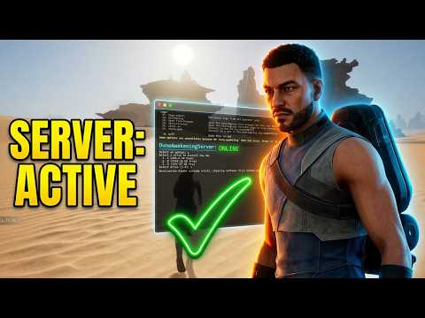
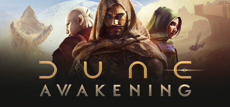
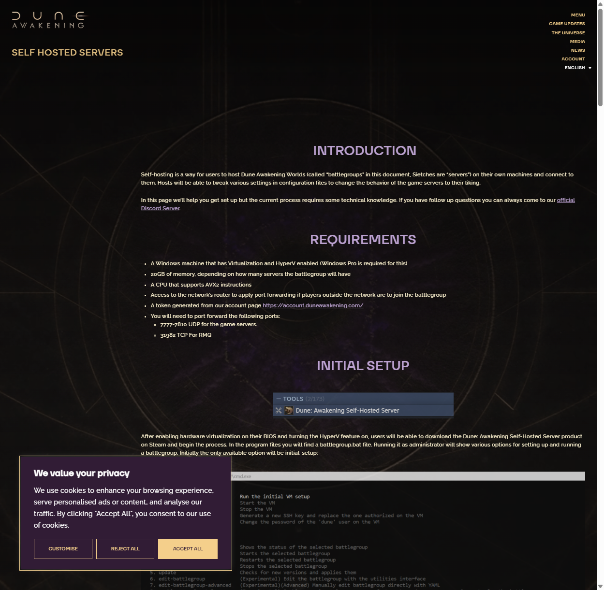
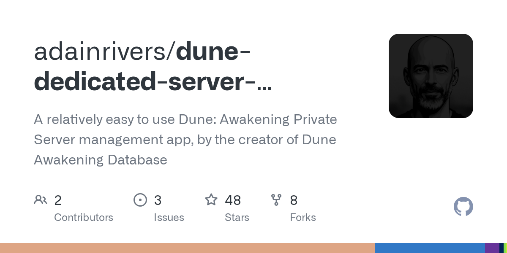
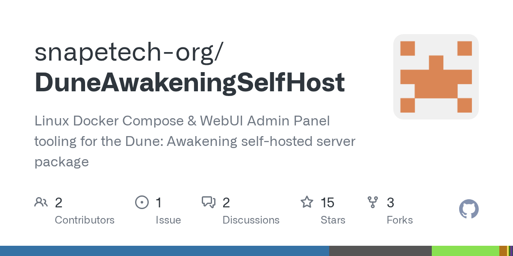
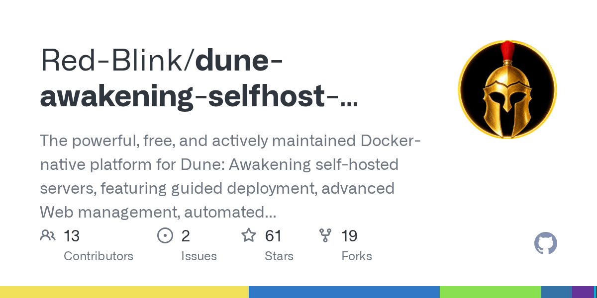

Servidor dedicado oficial (self-hosted) e ferramentas. Pedir o token em account.duneawakening.com.
| Vídeo | Projeto | O que faz | Pasta de origem | |
|---|---|---|---|---|
 Your Own PRIVATE Dune Awakening Server in One Sitting — Complete Wa |  | Dune: Awakening Self-Hosted Server | Pacote oficial do servidor dedicado (App 4754530). Instala pelo Steam ou SteamCMD e vem com o battlegroup.bat. | DUNE AWAKENING |
| sem vídeo |  | duneawakening.com/self-hosted-servers | Doc oficial do self-hosted: Hyper-V, 20GB de RAM, token da conta e portas 7777-7810/UDP + 31982/TCP. | DUNE AWAKENING |
| sem vídeo |  | adainrivers/dune-dedicated-server-manager | Manager desktop do Windows pro servidor: start/stop, backup e update (v0.3.18). | DUNE AWAKENING |
| sem vídeo |  | snapetech-org/DuneAwakeningSelfHost | DASH: Docker Compose + painel web pra rodar o pacote oficial no Linux. | DUNE AWAKENING |
| sem vídeo |  | Red-Blink/dune-awakening-selfhost-docker | Plataforma Docker pro servidor self-hosted, mantida junto com cada patch (v1.4.69). | DUNE AWAKENING |